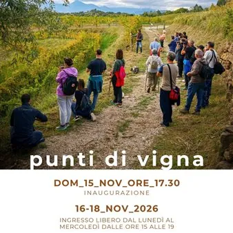

da dom 15 nov a mer 18 nov
Punti di vigna
Inaugurazione domenica 15 novembre ore 17.30. Tutto è iniziato tra i filari di Aquila del Torre - Vino per Natura, durante una passeggiata d’autunno insieme a Francesco Cecconi. Stesso territorio, stessi colori, stessa giornata… ma tanti occhi diversi dietro l’obiettivo. Un…
 Indicazioni
Indicazioni
- Costi e prenotazioni
- Costo non indicato · Prenotazione non indicata
- Programma
- Programma da verificare. Apri la fonte ufficiale per orari e possibili aggiornamenti.
- In caso di maltempo
- Nessuna indicazione specifica pubblicata.
- Note
- Acquisito automaticamente dalla fonte.
L’EVENTO
Descrizione completa
Inaugurazione domenica 15 novembre ore 17.30.
Tutto è iniziato tra i filari di Aquila del Torre - Vino per Natura , durante una passeggiata d’autunno insieme a Francesco Cecconi. Stesso territorio, stessi colori, stessa giornata… ma tanti occhi diversi dietro l’obiettivo.
Un incontro breve e informale dove verrà raccontato il progetto, con Michele Ciani proprietario di Aquila del Torre, Francesco Cecconi e lo scrittore Davide Colombo, che leggerà alcuni passaggi del suo romanzo.
Conduce Matteo Faggiani (EWINEGELISTA).
A seguire, brindisi in corte con i vini di Aquila del Torre e gli abbinamenti di Alimentari Tomadin.
Lunedì 16 novembre, ore 18:30 – La fotografia in vigna
Un incontro aperto a tutti: verrà raccontata la passeggiata fotografica attraverso la lettura delle foto esposte nella mostra.
Martedì 17 novembre, ore 18:30 – Una serata in giallo e rosso
Davide Colombo presenterà il suo romanzo "L’investigatrice in giallo e rosso".
Mostra visitabile con ingresso libero dal 16 al 18 novembre dalle ore 15 alle 19.
IL PROGRAMMA
Programma e orari
Appuntamenti raccolti dalle fonti elencate. Dove manca un orario, non è ancora disponibile in questa scheda.
Programma pubblicato
- Dal 2026-11-15 al 2026-11-18
INFORMAZIONI UTILI
Prima di partire
- Controllare la fonte prima di partire.
ORGANIZZAZIONE